Logo Design Concepts
A clean, wide-tracked wordmark in light weight sans-serif. A gold 4-pointed star sparkle floats above the "I" — the asterisk that marks something worth paying attention to. Faint constellation dots and lines frame the word in the cosmic background, placing the brand name among the stars. The light font weight conveys intelligence and elegance.
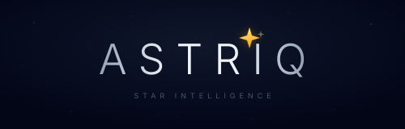
Horizontal — PrimarySeven data-point stars connected by faint lines form an organic constellation — a direct visualization of "connecting the dots." The brightest gold node at the top is the North Star, the signal in the noise. A central hub star represents the AI connecting everything. The constellation doubles as a data network graph, bridging the cosmic and analytical themes.
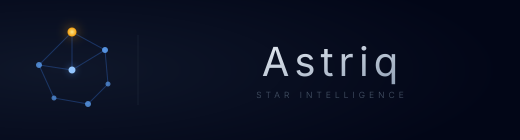
Combination Mark — Primary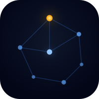
Icon — App / FaviconA reimagined asterisk (*) — six arms radiating from a bright center with glowing data-point dots at each tip. The asterisk is the "little star" (asteriskos) that marks something worth noticing. Rendered in indigo-to-violet gradient with a luminous white center, it feels both cosmic and digital. Works beautifully at any size, from app icon to billboard.
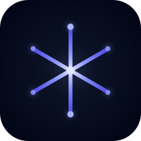
Icon Mark — PrimaryThe letter "A" — for Astriq — drawn as two ascending lines that reach toward a golden star at the apex. The star replaces the traditional pointed peak, turning the letterform into a monument to navigation. The gradient shifts from electric blue at the base to soft violet at the top, suggesting the journey from data to insight. The crossbar grounds the mark.
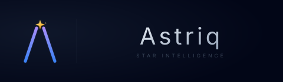
Combination Mark — Primary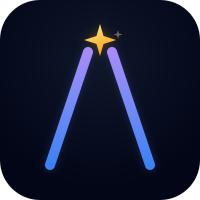
Lettermark — App / FaviconA single, brilliant North Star radiates eight data-lines outward like a compass rose — four cardinal beams and four fainter diagonals. Each ray terminates in a small data-point dot, suggesting signals being gathered from all directions. The gold 4-pointed star at the center is the insight, the signal found in noise. Paired with an ultra-light tracked wordmark.
Combination Mark — Primary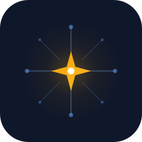
Icon — App / FaviconAn abstract eye shape constructed entirely from constellation dots and arcs — the AI "seeing" patterns in data. Twelve outer data-points trace the upper and lower lid curves, connected to an inner iris ring of eight nodes. At the center, a golden pupil with a tiny sparkle represents the moment of insight. The eye is both a lens and a constellation map.
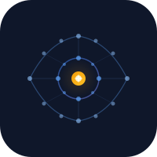
Icon — App / FaviconThe letter "A" built entirely from connected constellation data-points — no solid lines, just nodes and the thin threads between them. A gold apex star crowns the top, blue nodes trace both legs and the crossbar, with faint ghost-lines hinting at the full letterform. It's a data visualization that happens to spell the brand initial. Reads as both a network graph and a star map.
Combination Mark — Primary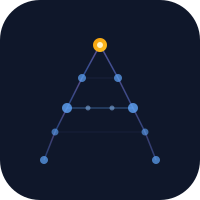
Lettermark — App / FaviconTwo concentric orbital rings with data-point dots tracing their circumference — representing the continuous cycle of content creation, measurement, and optimization. Faint spoke-lines connect the inner and outer orbits. A bright gold star sits slightly above center like a North Star focal point, the insight emerging from the cycle. The dual rings suggest both planetary orbits and dashboard dials.
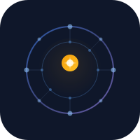
Icon — App / Favicon